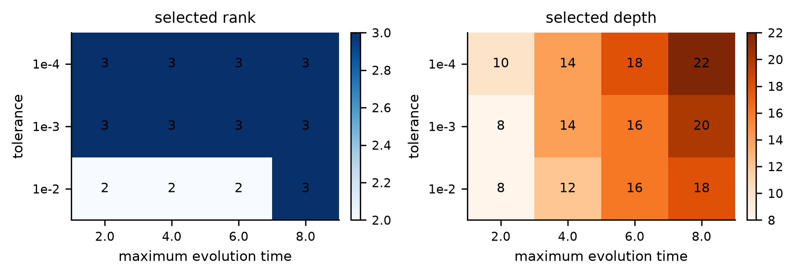
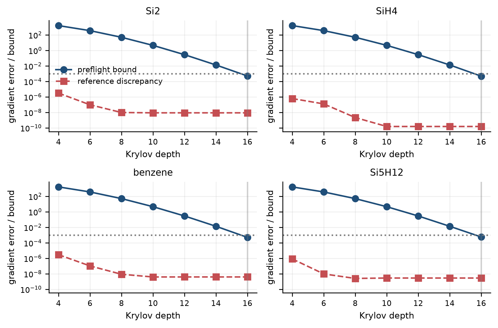
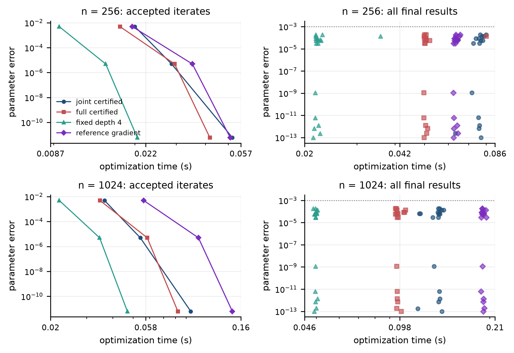
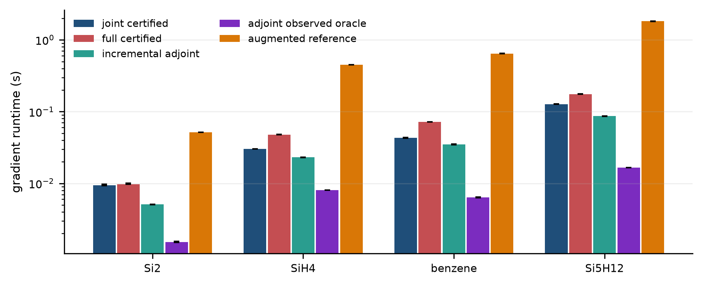

3
Selected rank
Eight correlated probe columns are compressed with the discarded singular tail charged to the certificate.
Matrix functions · block Krylov methods · operator learning
A preflight certificate selects probe rank and Krylov depth before the first Hamiltonian application, then evaluates a full block loss gradient through one compressed factorization.
For an affine symmetric operator family and correlated probe block, the method combines a uniform parameter-box spectral bound, a loss-aware discarded-block term, and cosine Chebyshev tails. Rank and depth are selected entirely from specified inputs.
Eight correlated probe columns are compressed with the discarded singular tail charged to the certificate.
The specified tolerance is 10−3 for evolution times 2, 4, and 6.
The original joint rule requires 120; refined full-rank certification requires 128.




Four authenticated Hamiltonians are tested against independent augmented-exponential references. Refined joint selection chooses rank 3 and depth 16, reducing work by 60% from the original joint rule. An executable incremental full-rank method remains faster at the primary tolerance; nominal work savings do not guarantee runtime savings.
The larger factorial study contains 288 recovery runs on 256- and 1,024-site chains. All meet parameter error 0.001, with compressed gradients during certified descent. Strict final accuracy can remove work savings. The original 36 recovery runs and their failed fits are preserved; 12 of 36 stress cases now compress probe rank.
Exact-arithmetic bounds do not certify every floating-point operation. The physical experiment is simulated amplitude learning, not device data or quantum advantage.